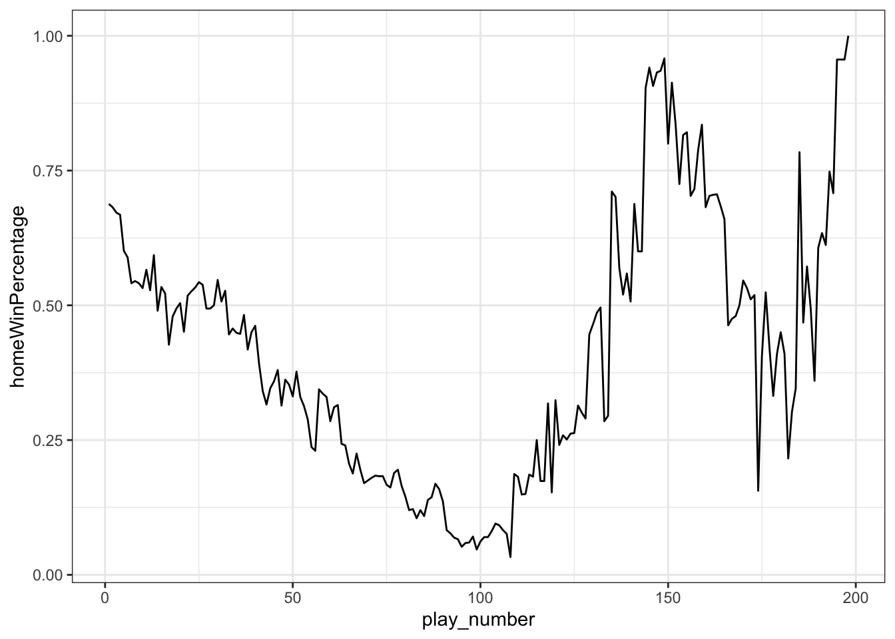
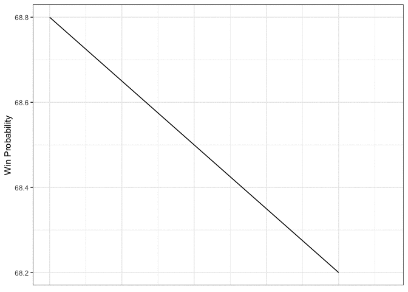
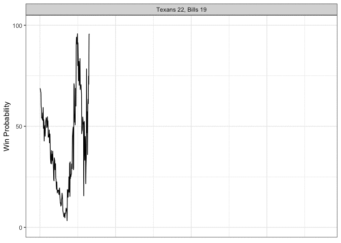

Perhaps the most interesting aspect of ESPN’s NFL game recap page is the win probability graph that they’ve included in the bottom left corner since the 2016 season. Without knowing anything else about the game, one could follow the twists and turns on this chart to relive all the exciting moments (if there were any).

In fact there’s a metric called the Excitement Index which adds up all the absolute changes in win probability to arrive at a single number that expresses a contest’s cumulative drama. You can think of the Excitement Index as pulling the win probability graph’s jagged path until it’s a tight horizontal line and then measuring its length. So can we retrieve all these win probability graphs in order to calculate and visualize their Excitement Index?
library(tidyverse)
library(rvest)
library(gganimate)
library(grid)
library(png)
library(RCurl)
options(dplyr.summarise.inform = FALSE)First we have to collect ESPN’s gamecast webpages and arrange them in a logical file structure. Since web-scraping is not the point of this blogpost and a somewhat questionable act to begin with, I won’t include the code that fetches each webpage. Feel free to message me if you’d like some help building a scraper.
Once we have the raw HTML, we can sift through it to gather the information we need. In particular, the away and home team identities are not too hard to find, along with their logos. The raw data for the win probability chart is hardcoded as a JSON object in one of the page’s accompanying scripts:
setwd("/Users/walkerharrison/Desktop/ESPN WinProb/")
html_files <- list.files(recursive = T)
dfs <- map(html_files, ~ {
year <- .x %>%
str_extract("(?<=eason/)\\d+") %>%
as.numeric()
season <- str_extract(.x, "[^/]+(?=/)")
week <- .x %>%
str_extract("(?<=Week\\s)\\d+") %>%
as.numeric()
game <- .x %>%
str_extract("\\d+(?=\\.html)") %>%
as.numeric()
page <- read_html(.x)
away <- page %>%
html_nodes("body") %>%
html_nodes(".away") %>%
html_nodes(".short-name") %>%
html_text()
home <- page %>%
html_nodes("body") %>%
html_nodes(".home") %>%
html_nodes(".short-name") %>%
html_text()
away_logo <- page %>%
html_nodes("body") %>%
html_nodes(".away") %>%
html_nodes(".team-logo") %>%
html_attr("src")
home_logo <- page %>%
html_nodes("body") %>%
html_nodes(".home") %>%
html_nodes(".team-logo") %>%
html_attr("src")
probability_data <- page %>%
html_nodes("script") %>%
keep(~str_detect(html_text(.x), "probability.data")) %>%
html_text() %>%
str_extract("probability\\.data.+") %>%
str_replace("probability.data = ", "") %>%
substr(1, nchar(.) -1) %>%
jsonlite::fromJSON(flatten = TRUE)
payload <- data.frame(year = year,
season = season,
week = week,
game = game,
home = home,
away = away,
home_logo = home_logo,
away_logo = away_logo)
if(length(probability_data) != 0) {
payload <- probability_data %>%
mutate(year = year,
season = season,
week = week,
game = game,
home = home,
away = away,
home_logo = home_logo,
away_logo = away_logo,
play_number = row_number())
}
payload
}
)We bind these dataframes together to create our master list, all_plays, and do a little bit of cleaning to weed out bad data – specifically, the first filter makes sure that the scores are non-decreasing, since occasionally a penalty-negated score will be momentarily counted, and the second filter stipulates that once a graph reaches 0% or 100% win probability, that game is over. The all important change variable is simply the (absolute) delta between the previous home win probability and the current one.
all_plays <- bind_rows(dfs) %>%
arrange(game, play_number) %>%
group_by(game) %>%
filter(play.homeScore <= lead(play.homeScore, defaul = Inf),
play.awayScore <= lead(play.awayScore, default = Inf)) %>%
filter(lag(cumsum(homeWinPercentage %in% c(0, 1)), default = 0) < 1) %>%
mutate(change = abs(homeWinPercentage - lag(homeWinPercentage))) %>%
ungroup()Now for the fun stuff! We aggregate the total change by each game and throw in some other identifying features. Maybe it shouldn’t be a surprise that the two games with the highest Excitement Index in recent years are both overtime ties:
game_EI <- all_plays %>%
group_by(year, season, week, game, home, home_logo, away, away_logo) %>%
summarize(home_final_score = max(play.homeScore),
away_final_score = max(play.awayScore),
ExcitementIndex = sum(change, na.rm = T)) %>%
mutate(winner = case_when(
home_final_score > away_final_score ~ "home",
home_final_score < away_final_score ~ "away",
TRUE ~ "tie"
)) %>%
arrange(desc(ExcitementIndex)) %>%
ungroup() %>%
mutate(score_text = ifelse(home_final_score > away_final_score,
paste0(home, " ", home_final_score, ", ", away, " ", away_final_score),
paste0(away, " ", away_final_score, ", ", home, " ", home_final_score)))
game_EI %>%
filter(season == "Regular Season") %>%
head(10) %>%
select(year, season, week, score_text, ExcitementIndex) %>%
knitr::kable()| year | season | week | score_text | ExcitementIndex |
|---|---|---|---|---|
| 2020 | Regular Season | 3 | Bengals 23, Eagles 23 | 14.8690 |
| 2016 | Regular Season | 8 | Redskins 27, Bengals 27 | 14.7430 |
| 2020 | Regular Season | 7 | Cardinals 37, Seahawks 34 | 13.2360 |
| 2016 | Regular Season | 8 | Raiders 30, Buccaneers 24 | 12.9310 |
| 2020 | Regular Season | 5 | Saints 30, Chargers 27 | 12.6710 |
| 2021 | Regular Season | 6 | Vikings 34, Panthers 28 | 12.3731 |
| 2018 | Regular Season | 4 | Raiders 45, Browns 42 | 12.0920 |
| 2020 | Regular Season | 1 | Chargers 16, Bengals 13 | 12.0320 |
| 2020 | Regular Season | 1 | Titans 16, Broncos 14 | 12.0270 |
| 2021 | Regular Season | 6 | Cowboys 35, Patriots 29 | 11.9796 |
Of course, no one really cares about a Week 3 Bengals game (sorry, Cincy), so let’s also print out the top postseason games, which feature some classic (and sometimes controversial) conference championships:
game_EI %>%
filter(season == "Postseason") %>%
head(10) %>%
select(year, season, week, score_text, ExcitementIndex) %>%
knitr::kable()| year | season | week | score_text | ExcitementIndex |
|---|---|---|---|---|
| 2019 | Postseason | 1 | Texans 22, Bills 19 | 10.136 |
| 2019 | Postseason | 1 | Vikings 26, Saints 20 | 9.565 |
| 2018 | Postseason | 3 | Rams 26, Saints 23 | 8.998 |
| 2018 | Postseason | 3 | Patriots 37, Chiefs 31 | 8.814 |
| 2018 | Postseason | 1 | Eagles 16, Bears 15 | 8.153 |
| 2017 | Postseason | 2 | Vikings 29, Saints 24 | 7.983 |
| 2018 | Postseason | 1 | Cowboys 24, Seahawks 22 | 7.962 |
| 2017 | Postseason | 2 | Eagles 15, Falcons 10 | 7.118 |
| 2017 | Postseason | 5 | Eagles 41, Patriots 33 | 7.010 |
| 2019 | Postseason | 1 | Titans 20, Patriots 13 | 7.006 |
So how do we straighten out a win probability chart to measure its length? First let’s take the original form of that top playoff game:
best_game <- game_EI %>% filter(season == "Postseason") %>% head(1)
plays <- all_plays %>% inner_join(best_game)
plays %>%
ggplot(aes(play_number, homeWinPercentage)) +
geom_line() +
theme_bw()
What we’re trying to do is “pull” each line segment until it’s horizontal. Another way to think of that is that we have a vector from one win probability to the next lying at an angle determined by the severity of the win probability change. If we slowly reduce that angle to 0, the vector will lie flat with a length of the distance between the original points.
reps <- 10
plays_flattened <- plays %>%
mutate(homeWinPercentage = 100*homeWinPercentage) %>%
mutate(change = (lead(homeWinPercentage) - homeWinPercentage)) %>%
# determine length and angle of each line segment
mutate(length = sqrt(1 + change^2),
angle = atan(change),
angled = angle*180/pi) %>%
# copy each row ten times
slice(rep(1:nrow(.), each = reps)) %>%
group_by(game, play_number) %>%
mutate(idx = row_number()) %>%
# gradually reduce the angle in each row copy
mutate(angled_new = (reps-idx)/(reps-1)*angled) %>%
mutate(angle_new = angled_new*pi/180) %>%
arrange(idx, play_number) %>%
group_by(game, idx) %>%
# use sine and cosine to determine the new x and y coordinates
mutate(newx = coalesce(lag(cos(angle_new)*length), play_number),
newy = coalesce(lag(sin(angle_new)*length), homeWinPercentage)) %>%
# accumulate these differences to get final location
mutate(new_play_number = cumsum(newx),
new_wp = cumsum(newy))Here’s what pulling the slack out of a single play looks like, courtesy of gganimate:
p <- plays_flattened %>%
filter(play_number %in% 1:2) %>%
ggplot(aes(new_play_number, new_wp)) +
geom_line() +
theme_bw() +
theme(axis.title.x=element_blank(),
axis.text.x=element_blank(),
axis.ticks.x=element_blank()) +
labs(y = "Win Probability", x = "Play Number") +
transition_time(idx)
animate(p, nframes = 150, fps = 25, start_pause = 50, end_pause = 50)
And here’s how it looks when you do all plays simultaneously:
p <- plays_flattened %>%
ggplot(aes(new_play_number, new_wp)) +
geom_line() +
scale_y_continuous(limits = c(0, 100), breaks = c(0, 50, 100)) +
scale_x_continuous(limits = c(0, max(plays_flattened$new_play_number) + 50)) +
theme_bw() +
theme(axis.title.x=element_blank(),
axis.text.x=element_blank(),
axis.ticks.x=element_blank()) +
labs(y = "Win Probability") +
transition_time(idx)
animate(p, nframes = 150, fps = 25, start_pause = 50, end_pause = 50)
Okay let’s spice this up a little bit. We’re going to do multiple games at once, pull in some logos, and make it so that the final straight line lands on the winning team, which we’ll accomplish my gradually moving the y-component toward 1 or 0, depending on who won the game.
best_games <- game_EI %>% filter(season == "Postseason") %>% head(5)
plays_flattened <- all_plays %>%
inner_join(best_games) %>%
arrange(desc(ExcitementIndex)) %>%
# ensures the're in decscending excitement order on the facet
mutate(score_text = factor(score_text, levels = unique(.$score_text))) %>%
group_by(game) %>%
# same process as before
mutate(homeWinPercentage = 100*homeWinPercentage) %>%
mutate(change = (lead(homeWinPercentage) - homeWinPercentage)) %>%
mutate(length = sqrt(1 + change^2),
angle = atan(change),
angled = angle*180/pi) %>%
slice(rep(1:nrow(.), each = reps)) %>%
group_by(game, play_number) %>%
mutate(idx = row_number()) %>%
mutate(angled_new = (reps-idx)/(reps-1)*angled) %>%
mutate(angle_new = angled_new*pi/180) %>%
arrange(idx, play_number) %>%
group_by(game, idx) %>%
mutate(newx = coalesce(lag(cos(angle_new)*length), play_number),
newy = coalesce(lag(sin(angle_new)*length), homeWinPercentage)) %>%
mutate(new_play_number = cumsum(newx),
new_wp = cumsum(newy)) %>%
# now we gradually move the line up toward 1 or 0
group_by(game, play_number) %>%
mutate(new_wp_adj = case_when(
winner == "home" ~ new_wp + (idx-1)/(reps-1)*(100-new_wp),
winner == "away" ~ new_wp + (idx-1)/(reps-1)*(-new_wp),
winner == "tie" ~ new_wp + (idx-1)/(reps-1)*(50-new_wp))
) %>%
ungroup()
p <- plays_flattened %>%
ggplot(aes(new_play_number, new_wp_adj)) +
geom_line() +
scale_y_continuous(limits = c(-20, 120), breaks = c(0, 50, 100)) +
scale_x_continuous(limits = c(-150, max(plays_flattened$new_play_number) + 50)) +
facet_wrap(~score_text, ncol = 1) +
theme_bw() +
theme(axis.title.x=element_blank(),
axis.text.x=element_blank(),
axis.ticks.x=element_blank()) +
labs(y = "Win Probability",
title = "Most Exciting Postseason Games Since 2016")The annotation_custom2 function from this Stack Overflow post allows us to add the team logos to individual facets:
annotation_custom2 <- function (grob, xmin = -Inf, xmax = Inf, ymin = -Inf, ymax = Inf, data){
layer(data = data, stat = StatIdentity, position = PositionIdentity,
geom = ggplot2:::GeomCustomAnn,
inherit.aes = TRUE, params = list(grob = grob,
xmin = xmin, xmax = xmax,
ymin = ymin, ymax = ymax))}
for (gm in best_games$game){
away_img <- best_games %>% filter(game == gm) %>% pull(away_logo) %>% getURLContent() %>% readPNG()
home_img <- best_games %>% filter(game == gm) %>% pull(home_logo) %>% getURLContent() %>% readPNG()
away_annotation <- annotation_custom2(rasterGrob(away_img, interpolate=TRUE), xmin = -150, xmax = -10, ymin = -20, ymax = 40,
data = plays_flattened %>% filter(game == gm))
home_annotation <- annotation_custom2(rasterGrob(home_img, interpolate=TRUE), xmin = -150, xmax = -10, ymin = 60, ymax = 120,
data = plays_flattened %>% filter(game == gm))
p <- p + away_annotation + home_annotation
}
p <- p + transition_time(idx)
animate(p, nframes = 150, fps = 25, start_pause = 30, end_pause = 50)
Now that’s a good looking GIF!